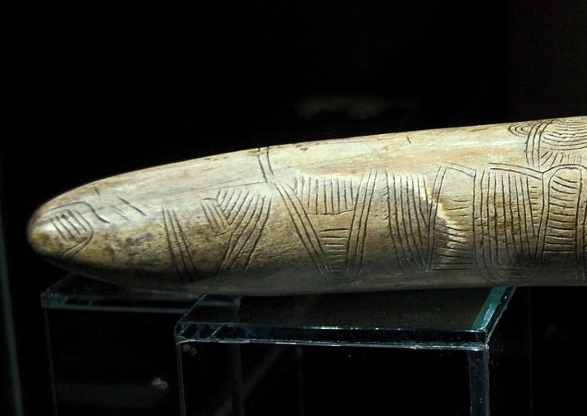
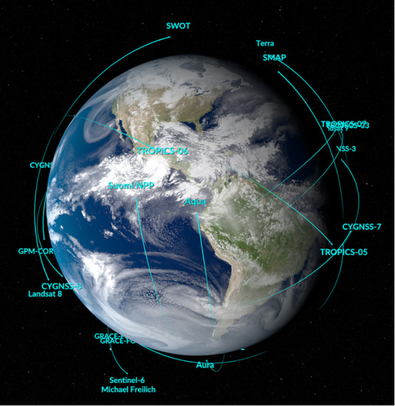
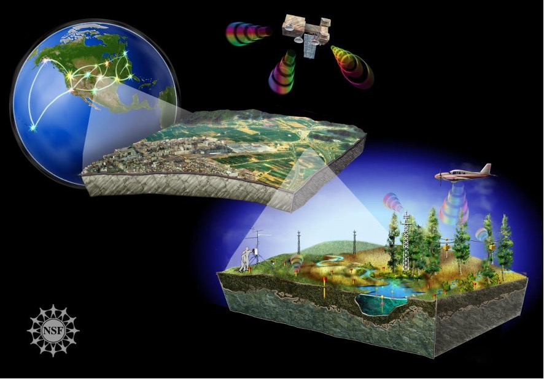
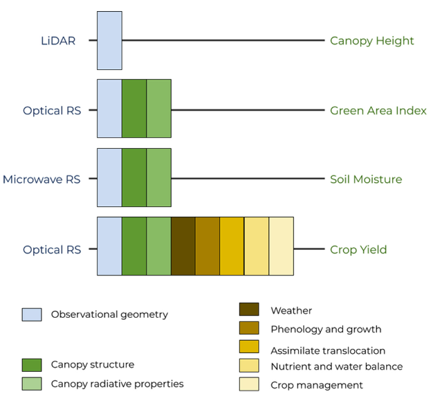
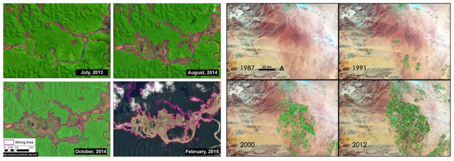
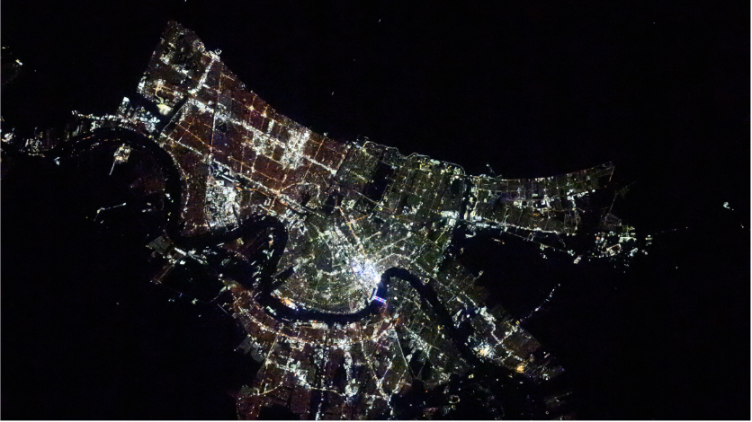
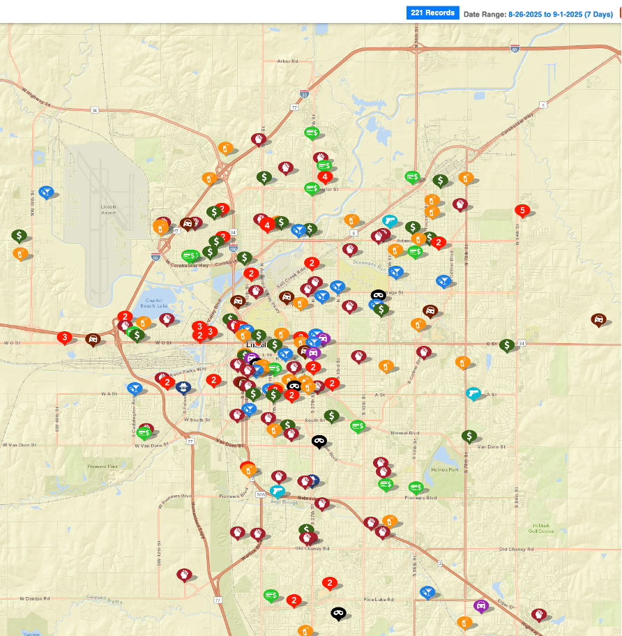
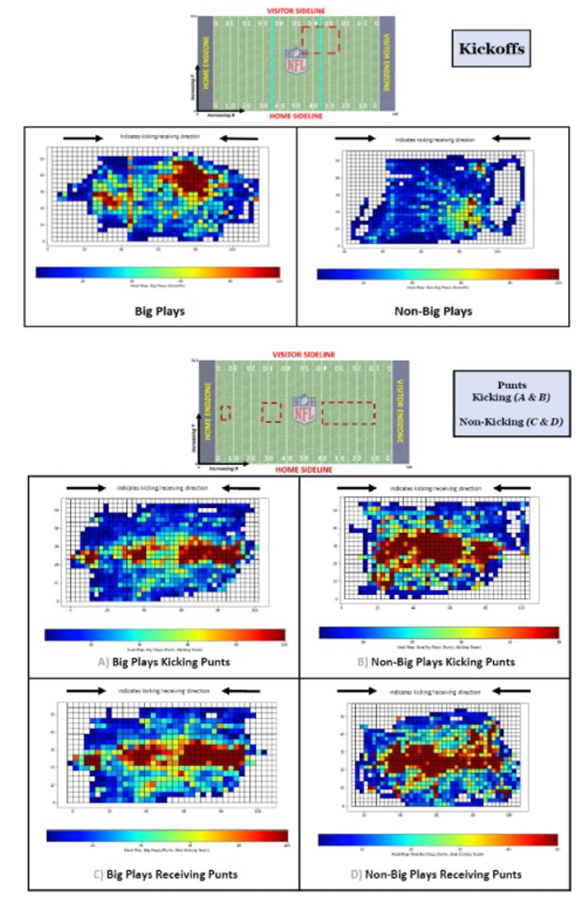

2 The Geospatial World
GIS addresses the where — not just the what.
The world we live in is fundamentally a geospatial world—meaning that space, location, and the spatial relationships between places shape much of how we experience, understand, and interact with our environment. From the earliest days of human history, our ancestors relied on an intuitive sense of geography—not just to navigate but to find food, communicate, form communities, and adapt to their ever-changing surroundings. In fact, the ability to understand and use spatial information has been critical to human survival and advancement for millennia. Today, this same understanding of space is embedded in nearly every aspect of our lives—from the digital maps that guide us on daily commutes to the complex systems that help us manage natural resources, plan cities, track diseases, and predict environmental changes. Centered around geospatial data — data tied to geographical locations — geographical information system (GIS) is a computer-based system for gathering, managing, analyzing, and visualizing spatial data.
2.1 Relationship to Geography
According to the definition given by National Geographic, Geography is “the study of places and the relationships between people and their environments.” As one of the earliest subjects in human’s history that has been systematically studied, geography serves both as a practical skill and an academic discipline that studies not of mere names but of argument and reason, of cause and effect (William Hughes, 1863). In fact, the need to understand the world around us—its landscapes, resources, and spatial relationships—has been essential to survival for millennia. Early humans were natural geographers, navigating their environment, tracking animal migrations, and using landmarks for orientation Figure 2.1. Formal study of geography began to take shape more systematically in ancient civilizations, ranging from navigation (dead reckoning, estimating an object’s position by using a previously determined position) to cartography. In the modern ages, various new technologies, such as global navigation satellite system (GNSS) and remote sensing (RS) enable revolutionary methods for exploring the spatial relationship among subjects around us, and the relationship between human and the environments. By integrating remote sensing, GNSS, spatial modeling, and data science, GIS brings precision, scalability, interactivity, and analysis power that were impossible before. In summary, GIS is NOT a replacement for geography, but a powerful tool that modernizes how geography is practiced.

2.2 Geospatial technologies
In this book, we will discuss three major geospatial technologies, including Geographic Information System (GIS), Global Navigation Satellite System (GNSS) and remote sensing (RS). We will focus primarily on GIS, treating GNSS and RS as major data sources that support spatial analysis and visualization through GIS systems without scrutinizing all the technical details, which deserve separate books to cover. For the same reason, we will omit other geospatial technologies such as spatial data modeling or land surveying, which serve as unique data sources or analysis methods in GIS but will ultimately distract the discussion.
2.2.2 Remote Sensing (RS)
Remote sensing refers to the science and technology using electromagnetic energy to measure the properties of distant objects (Moore 1979). Remote sensing acquires information about an object without being in physical contact with that object. Remote sensing can be conducted from various platforms, ranging from ground-based systems, unmanned aerial vehicles (UAVs; aka drones), aircraft and satellites. For example, NASA missions have studied the Earth using satellite systems for more than fifty years. The current fleet of satellites and sensors provide up-to-date information about Earth’s oceans, freshwater, land, and air on a global scale, allowing us to understand how Earth’s dynamic systems interact Figure 2.3.

2.2.3 Geographic information system (GIS)
Novel spatial technologies, such as GNSS and remote sensing, provide unprecedented powerful data for understanding the earth and the complicated human-environment system. GIS offers the framework to organize, manage, analysis, and visualize these multi-source spatial data Figure 2.4. With the goal of storing “all types of location-specific information,” the first GIS system was developed in the 1960s, designed to provide large-scale mapping of land use in Canada (Tomlinson 1968). It gathered multi-disciplinary land inventory of rural Canada, covering over 2.5 million square kilometers of land and water (sis.agr.gc.ca). The concept of operational GIS was quickly adopted by the US Census Bureau for digitizing census boundaries and Ordnance Survey, national mapping agency for Great Britain, for routine topographic map production. After the fast growth in the 1990s and the early 21st century, digital mapping and analysis has been adopted around the world for various applications. Through spatial analysis and visualization, GIS allows us to describe, model, and explain spatial patterns and trends on Earth’s surface, uncovering hidden relationships and insights that would be difficult to identify without this tool.

2.3 Applications
Originated from natural resources management and land survey, applications of GIS are now spanning every corner of our lives, including precision agriculture, land use change, ecosystem monitoring, natural hazards and disasters, public health and safety etc.
2.3.1 Precision agriculture
Precision agriculture aims to apply new technologies to boost crop yields and livestock productivity and increase profitability while lowering the need for traditional inputs, such as land, water, fertilizer, herbicides and insecticides. By capturing various physical properties of the target (e.g. leaf pigment content, canopy structure) using field sensors and remote sensing technologies, we can get detailed information about plant biomass, soil conditions, vegetation stress status (drought, nutrients, pest etc.) in a timely manner Figure 2.5.

2.3.2 Land use and land cover change (LULCC)
Land Use and Land Cover Change (LULCC) refers to the transformation of the Earth’s surface caused by natural processes and human activities. Understanding LULCC is essential for managing natural resources, planning urban development, and addressing environmental issues such as deforestation, climate change, and biodiversity loss. Modern geospatial technologies allow scientists, planners, and policymakers to detect, map, and analyze changes over time — often across large and inaccessible areas. Satellite remote sensing can reveal both abrupt and gradual land use and land cover change Figure 2.6.

Long-term time series of satellite imagery can also reveal urbanization processes over time and space. One particular interesting application is the use of nighttime light, which captures artificial lighting on Earth’s surface from buildings, industrial zones and road networks. As urban areas expand, their brightness at night increases, making nighttime lights a direct proxy for human presence and economic activity Figure 2.7.

2.3.3 Biodiversity and Conservation
The broad definition of biodiversity refers to the total variability of living organisms on Earth, including diversity within species, between species and of ecosystems. Till the end of the 20th century, the advance of ecology started to cause scientists and the public to realize the alarmingly rapid loss of biodiversity. In late 1980s, reports stated the loss rate of the world’s biodiversity “is likely to increase over the next several decades” (US Congress Office of Technology 1987) and the American public “sees biodiversity needs to be protected” (Nash 1989). In the late 1990s to the early 21 century, biodiversity was linked to ecosystem function, and began to be recognized as an important global change issue in its own right (Pimm et al. 1995). Now, biodiversity loss is treated as a global change with consequences that may exceed that of climate change in generating unacceptable environmental change to the Earth system (Rockström et al. 2009). Conservation of biodiversity is important on account of the distribution and abundance of species over space and time and the functional roles each species plays in an ecosystem (Hooper et al. 2005). GIS offers a unique tool to understand how species diversity varies across space and time, providing a foundation from which to explore the mechanisms of species interactions and to understand the processes that drive variation in species numbers and their distribution (Mittelbach 2012). Combining with field observations, geospatial technologies, especially remote sensing, have been used to characterize the Earth’s biophysical environment, aiming to address conservation of biodiversity across various spatial and temporal scales (Figure 8).
2.3.4 Crime mapping
Geographic Information Systems (GIS) plays a crucial role in understanding and preventing crime by allowing law enforcement agencies and city planners to visualize where, when, and how crimes occur Figure 2.8. By mapping crime data — such as burglary, assault, or vehicle theft — onto digital maps, GIS reveals spatial patterns that would be difficult to detect in spreadsheets or reports. For example, GIS can help identify crime hotspots — areas with a high concentration of incidents — enabling police to allocate resources more efficiently. It can also show how crime is related to other factors, such as lighting, land use, population density, or proximity to schools and transportation hubs. With these insights, authorities can make data-informed decisions about patrol routes, urban planning, or community outreach. Beyond policing, crime mapping also supports public awareness, research, and policy development, encouraging more transparent and proactive safety strategies.

2.3.5 Sports
In addition to the more conventional applications discussed above, GIS also has exciting and growing applications in the field of sports. From analyzing player movements on the field to mapping the geographic distribution of fans, GIS provides valuable spatial insights that help teams, leagues, and cities make smarter decisions. One major application is in sports performance analysis, where GIS and GPS technologies help track athletes’ positions, speeds, and movement patterns during games or training Figure 2.9. Coaches and analysts can visualize these data on spatial maps to improve tactics, reduce injury risk, or evaluate fitness. Off the field, GIS is used to map fan demographics and ticket sales, helping sports franchises understand where their supporters live and how to improve marketing or event planning. Cities and sports organizations also use GIS for stadium site selection, traffic and crowd flow planning, and emergency preparedness during major sporting events. Whether it’s optimizing the layout of a marathon course or managing spectators at the World Cup, GIS brings spatial intelligence to the game.

In summary, GIS is used nearly everywhere to analyze, visualize, and solve spatial problems. In environmental science, GIS supports habitat mapping, climate modeling, and natural disaster response. In urban planning, it helps design cities, manage transportation systems, and plan public services more efficiently. In agriculture, GIS is used to optimize crop yields through precision farming and soil analysis. In public health, GIS maps the spread of diseases, identifies healthcare access gaps, and supports pandemic response strategies. Cities and police departments use GIS to detect crime patterns, guide patrols, and build safer communities. Businesses and retailers use GIS to analyze customer locations, site new stores, and study market trends. In sports, GIS tracks athlete movement, supports facility planning, and maps fan engagement. Even fields like education, archaeology, and emergency management benefit from GIS, making it one of the most versatile tools in modern decision-making. Whether monitoring land use changes with remote sensing, navigating with GPS, or modeling urban growth, GIS helps us better understand and interact with the world through the lens of location.
2.4 References
Hooper, D. U., F. S. Chapin Iii, J. J. Ewel, A. Hector, P. Inchausti, S. Lavorel, J. H. Lawton, D. M. Lodge, M. Loreau, S. Naeem, B. Schmid, H. Setala, A. J. Symstad, J. Vandermeer, and D. A. Wardle. 2005. Effects of biodiversity on ecosystem functioning: a consensus of current knowledge. Ecological Monographs 75:3-35.
Koohikamali, M., and E. Dockins. 2025. Beyond the Scrimmage Line: A Geospatial Big Data Perspective on NFL Special Teams. Page 5253 Proceedings of the 58th Hawaii International Conference on System Sciences.
Mittelbach, G. G. 2012. Biodiversity and Ecosystem Functioning. Pages 41-62. Sinauer Associates, Inc., Sunderland, Massachusetts.
Nash, R. F. 1989. The rights of nature: A history of environmental ethics. University of Wisconsin Press, Wisconsin.
Pimm, S. L., G. J. Russell, J. L. Gittleman, and T. M. Brooks. 1995. The future of biodiversity. Science 269:347-350.
Rockström, J., W. Steffen, and K. Noone. 2009. A safe operating space for humanity. Nature 461:472–475.